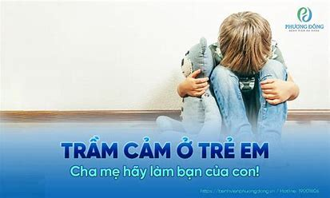

Đơn vị dự thi: Chi Bộ KP5 - P. Hiệp Thành
Người tham dự: Phạm Duyên Hà
Bài dự thi: Thư Gửi Tương Lai
GIA ĐÌNH NHỎ - HẠNH PHÚC TO
Hiệp Thành, ngày 22 tháng 7 năm 2024
Chào các cháu của ta,
Lại là ta đây, hôm nay ta lại tiếp tục câu chuyện dang dở kỳ trước nhé, câu chuyện về gia đình ấy.
Ở thế hệ các con đã từng được nghe bài hát thiếu nhi có tên Gia đình nhỏ - Hạnh phúc to chưa nhỉ? bài hát đó rất là hay đó. Nếu các con chưa được nghe thì hãy tìm, nghe và cảm nhận xem ta có quảng cáo sai không nhé… kakakakk
Một nụ cười bé, cha vui cả ngày; một vài tiếng khóc, mẹ lo hằng đêm
Thầm cầu mong cho con sẽ an lành. Chín tháng sinh thành, một đời yêu thương
Con thấy không, hạnh phúc có phải là gì to tát đâu, chỉ cần một nụ cười của các con sẽ xóa tan được u phiền trong lòng cha mẹ, là lời động viên to lớn giúp cha mẹ vượt qua những khó khăn trong cuộc sống. Nhưng ngược lại, chỉ cần các con hắt hơi hay sổ mũi đã làm cho cha mẹ lo lắng vô cùng.
Thế nên, nếu các con khi đọc được lá thư này dù là con đã trưởng thành hay vẫn còn là đứa trẻ thì các con hãy nhớ cha mẹ là người yêu thương các con vô điều kiện thế nên hãy hiếu kính với cha mẹ. Hãy thể hiện tấm lòng biết ơn cha mẹ bằng cách học thật tốt, làm việc gì cũng nên cân nhắc trước sau, sống phải có trách nhiệm với bản thân, gia đình và xã hội. Hãy là tấm gương sáng cho thế hệ sau của các con noi theo.
Trong cuộc sống của các con, chắc chắn sẽ có lúc thuận lợi, có lúc vất vả, gian nan. Nhưng con đừng nên bi quan, vì sau cơn mưa trời lại sáng, hơn tất cả, sau lưng con còn có gia đình làm điểm tựa, hãy trở về nhà và tận hưởng sự bình yên. Ta tin rằng với sự hậu thuẫn đó, con sẽ có đầy đủ ý chí và nghị lực để vượt qua những chông gai, thử thách.
Có được thân người không dễ dàng gì, thế nên ta mong các con trân trọng bản thân mình, đừng chỉ vì một phút bồng bột hay một lần bị tổn thương trong tình cảm trai gái mà hủy hoại bản thân. Vì nếu bản thân mình không tự biết trân trọng mình thì sẽ không có ai trân trọng mình đâu.
Cũng như vậy, trong cuộc sống đời thường cũng như trong hôn nhân của các con chắc chắn cũng sẽ không tránh được sự va chạm, cãi cọ. Những lúc như vậy, ta mong các con hãy tự kiềm chế bản thân mình, hãy cho bản thân mình và đối phương có một phút lặng để sự xung đột không bị đẩy lên đỉnh điểm. Và dù lúc đó có giận thế nào đi nữa, ta mong các con đừng sử dụng nắm đấm hay những lời đe dọa, nhục mạ đối phương để giải quyết xung đột, nhất là trong cuộc sống vợ chồng.
Trong thư trước ta đã từng nói vợ chồng phải yêu thương nhau, quan tâm, chăm sóc và tôn trọng lẫn nhau; cùng nhau gánh vác, sẻ chia khó khăn và thụ hưởng thành quả đạt được và bình đẳng trong cuộc sống. Thế nên việc sử dụng bạo lực để giải quyết mâu thuẫn gia đình (mà người ta thường gọi đó là bạo lực gia đình) là điều ngu ngốc nhất. Vì bạo lực chỉ làm cho đối phương vì sợ mình bạo hành mà cúi đầu, chứ trong tâm thì coi thường và khinh khi mình tột độ. Lúc đó, liệu hạnh phúc của gia đình có còn không, nền tảng hạnh phúc không còn tồn tại, nếu còn thì chẳng qua chỉ là vỏ bọc, là một quả bom hẹn giờ chờ nổ. Bạo lực gia đình không chỉ làm tan vỡ hạnh phúc của đôi vợ chồng, mà nó còn phá hủy cả tinh thần và cuộc sống sau này của những đứa trẻ vô tội và những người phụ nữ đáng thương. Nguy hiểm nhất là bạo lực gia đình gây tổn hại cho trẻ về thần kinh, dễ hình thành nên những suy nghĩ tiêu cực, dễ rơi vào trầm cảm, hoặc gặp những cơn ác mộng; có xu hướng bắt chước những hành vi bạo lực của người lớn; hoặc tỏ ra nhút nhát hoặc hung hăng quá mức. Con đang thắc mắc là nếu người bị bạo hành là người chồng, là nam giới thì sao? Thì cũng như vậy thôi chỉ cần là người bị bạo hành sẽ phải chịu ấm ức, dễ bị ức chế, bị trầm cảm, trở nên bi quan, không thiết tha với cuộc sống…
Thế nên, đã là vợ chồng thì nên suy nghĩ cho nhau, đặt mình vào vị trí của nhau để xem xét sự việc, để thông cảm cho nhau, hiểu nhau. Từ đó, nền tảng hạnh phúc gia đình được xây dựng ngày càng vững chãi, rồi chúng ta sẽ dễ dàng có được niềm vui và thuận lợi trong cuộc sống. Gia đình có hạnh phúc thì xã hội mới phồn vinh và thịnh vượng. Vì gia đình chính là tế bào của xã hội, tế bào có khỏe mạnh thì thân thể mới an khang.
Thế nên mới nói “Gia đình nhỏ - Hạnh phúc to” là ý nghĩa vậy
Mong là qua lá thư này, các con sẽ có cách nhìn tích cực về cuộc sống, trân trọng bản thân và gia đình. Hẹn các con ở những lá thư sau nhé.
Yêu các con.
Người viết
Phạm Duyên Hà
Hội LHPN Phường Hiệp Thành
Chi hội Phụ Nữ KP5
Người dự thi: Phạm Duyên Hà
Số điện thoại: 0987017153
BÁO ÂN ?
Tôi tình cờ quen và biết chị qua người quen của chồng.
Chị, tuy không đẹp nhưng có dáng người cao ráo, nước da trắng, giọng nói nhẹ nhàng. Lớn lên trong cô nhi viện, năm 12 tuổi, chị được một gia đình giàu có nhận nuôi với mục đích kiếm vợ cho người con trai khuyết tật của mình.
Năm 25 tuổi, tình duyên không như ý, chị bỏ nhà đi xa lập nghiệp, trước là muốn trải nghiệm cuộc sống, sau là muốn quên đi mối tình dang dở. Sau 3 năm, chị quay về, đồng ý trước điều kiện gia đình đưa ra, chị lấy anh - người con trai khuyết tật của gia đình, đổi lại chị có được số tiền khởi nghiệp và tiền xây nhà trên miếng đất cha mẹ chồng cho. Bất chấp sự nguy hiểm đến tính mạng, chị liều lĩnh sinh con trong khi bản thân có bệnh tim. Chị cho rằng việc lấy anh và sinh con cho anh chính là chị đã báo ân công ơn gia đình cưu mang chị. Và ai cũng tưởng chị sẽ hạnh phúc với gia đình nhỏ của mình, nhưng không, chị luôn hoài niệm về mối tình cũ. Chị né tránh chồng mình bằng cách lao vào công việc, đi làm từ sáng sớm và lên giường ngủ lúc nửa đêm. Tuy là rất yêu chị nhưng anh dần mất kiên nhẫn. Không được đáp ứng, anh tìm cách cưỡng đoạt chị, chị càng trốn tránh anh nhiều hơn. Từ yêu, anh sinh lòng oán hận. Không la hét, không đánh đập, anh lựa chọn việc tra tấn chị bằng những lời mạt sát, sỉ vả vừa đủ cho chị nghe từ ngày này qua ngày khác. Thay vì mở lòng và sửa chữa vết rạn nứt trong quan hệ vợ chồng, chị đã chọn cách im lặng như thể tôi nhường anh vì anh là người khuyết tật. Và càng tức tối, anh rỉ rả bên tai chị nhiều hơn. Cứ thế, gia đình nhỏ đã trở thành địa ngục trần gian của anh và chị. Còn con trai chị từ 1 học sinh giỏi đã bỏ học khi đang dở dang lớp 10. Tổn thương nhau sâu sắc và việc anh chị ly hôn là điều không thể tránh khỏi.
Chị mua 1 miếng đất và dựng ngôi nhà lá ở cùng cậu con trai 15 tuổi. Tưởng con trai đã lớn, chứng kiến việc ba hành hạ mẹ suốt thời gian qua, cậu sẽ yêu thương mẹ nhiều hơn. Nhưng không, khi những đòi hỏi về vật chất không được đáp ứng, cậu sẽ áp dụng chiêu khủng bố tinh thần mẹ mà ba cậu đã từng làm trong mười mấy năm qua.
 Nhẫn nhịn, tưởng rằng cuộc đời mình đã sang trang mới nhưng nay lại bị chính đứa con bảo bối sỉ vả, chì chiết mình, chị thất vọng và trở nên cộc cằn với con. Mỗi lúc chị đi làm về, là hàng xóm sẽ bắt đầu nghe tiếng mẹ con chị mắng chửi nhau ngày càng nhiều.
Chỉ vì lựa chọn sai lầm và thiếu trách nhiệm với sự lựa chọn đó, chị đã biến một người đàn ông đơn thuần thành kẻ bạo hành, thành tấm gương xấu cho con và bước đầu con chị đã trở thành bản sao của anh và tự biến mình thành người bị bạo hành trong suốt thời gian dài…
Chúng ta thường nghe nói :”Gia đình là tế bào của xã hội, là hình thức thu nhỏ của xã hội” nên bạo lực gia đình cũng có thể được coi là hình thức thu nhỏ của bạo lực xã hội. Và bạo lực gia đình thường là nguyên nhân khởi phát trầm cảm và rối loạn hành vi, tâm lý đặc biệt là với trẻ em. Câu chuyện trên là minh chứng của tác hại bạo lực gia đình.
Thế nên, hãy yêu thương các thành viên trong gia đình, hãy dùng chân tâm đối xử với nhau, xây dựng, góp ý nhau để các thành viên thấu hiểu, chia sẻ, cảm thông nhau. Để nhà là nơi ta quay về, nơi cho ta yên bình dù đi đâu thật xa cũng muốn trở về.